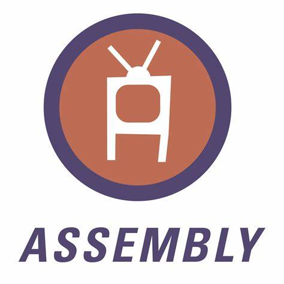

Guilherme barbosa da silva e sou estudante de engenharia de software na  Estácio estou aprendendo sobre a Lógica da programação e Desenvolvimento Full-stack na
Estácio estou aprendendo sobre a Lógica da programação e Desenvolvimento Full-stack na  FAISP
FAISP
Desenvolvimento full-stack engloba tanto o desenvolvimento front-end como o banck-end que é a interface do usúario até o banco de dados
Acesse meu
Meu Hobby

SOBRE
Meu cronograma
Cronograma
| Cronograma |
| NEW |
| Horários |
| NEW |
| 05:00 AM |
06:00 AM |
07:00 AM |
08:00 AM |
09:00 AM |
10:00 AM |
11:00 AM |
12:00 AM |
13:00 PM |
14:00 PM |
15:00 PM |
16:00 PM |
17:00 PM |
18:00 PM |
19:00 PM |
20:00 PM |
21:00 PM |
22:00 PM |
23:00 PM |
00:00 PM |
| NEW |
| Atividades |
| NEW |
| Iniciar |
Desepertar |
Acordar |
Planejar |
Arummar a cama |
Tomar café |
Ir a academia |
Treinar |
Voltar |
Descansar |
Fazer almoço |
Estudar |
Ouvir |
Praticar |
Meditar |
Treinar |
Ir ao trabalho |
Intervalo |
Voltar |
Estudar |
| NEW |
| Status |
| NEW |
| Bom |
Otimo |
Legal |
Muito bom |
Bem divertido |
Maravilha |
Mais ou menos |
Bom demais |
Ruim |
Lets,go |
Lets,place |
Right,now |
Very good |
Very joob |
Nice |
Excelente |
Explendido |
Excepcional |
Maravilhoso |
Paz |
| NEW |
| NOTAS |
| NEW |
| 10 |
8 |
5 |
6 |
7 |
8 |
9 |
10 |
8 |
7 |
7 |
8 |
10 |
8 |
9 |
10 |
8 |
9 |
9 |
10 |
| NEW |
| FIM |
Estacio de Sá
SOBRE
 Missão
Missão- Integramos academia e gestão para oferecer uma educação transformadora ao maior número de pessoas, criando impacto positivo para a sociedade.
 Visão
Visão- EDUCAR PARA TRANSFORMAR
 Valores
Valores- Foco no aluno
- O aluno é nossa razão de ser.
- Gente e Meritocracia
- Valorizamos e reconhecemos o mérito do maior ativo que possuímos: nossa gente.
- Inovação
- Devemos criar e ousar sempre.
- Simplicidade
- Devemos ser simples para sermos ágeis e austeros.
- Resultado
- Perseguimos resultados extraordinários com paixão e método, agindo sempre como “donos”.
- Ética
- Não toleramos desvios de conduta.
- Excelência
- Perseguimos a excelência na prestação de serviços dentro e fora da sala de aula.
- Hospitalidade
- Tratamos as pessoas como gostamos de ser tratados.
Linguagens Cursadas
Linguagens
 Python
Python- Uma linguagem de alto nível, interpretada e com foco em legibilidade. Popular em ciência de dados, desenvolvimento web e automação.
Uso: Análise de dados, aprendizado de máquina, desenvolvimento web (Django, Flask).
 Java
Java- Linguagem de programação orientada a objetos, portátil e amplamente usada em aplicações empresariais e Android.
Uso: Desenvolvimento de aplicações para servidor, aplicativos móveis, sistemas embarcados.
 Javascript
Javascript- Linguagem de programação interpretada, utilizada principalmente para desenvolvimento web. Permite interatividade em páginas da web.
Uso: Front-end (React, Angular) e back-end (Node.js).
 C
C- Linguagem de programação de baixo nível, muito próxima do hardware. É a base para muitas outras linguagens.
Uso: Desenvolvimento de sistemas operacionais, firmware, aplicativos de alto desempenho.
 C++
C++- Uma extensão do C que inclui programação orientada a objetos. É usada em sistemas onde a eficiência é crucial.
Uso: Desenvolvimento de jogos, software de sistemas, aplicações de alto desempenho.
 C#
C#- Linguagem de programação orientada a objetos desenvolvida pela Microsoft, parte do .NET Framework.
Uso: Desenvolvimento de aplicações desktop, jogos (Unity) e aplicações web (ASP.NET).
 Ruby
Ruby- Linguagem de programação de alto nível, focada na simplicidade e produtividade. Conhecida pelo framework Rails.
Uso: Desenvolvimento web (Ruby on Rails), automação e prototipagem.
 PHP
PHP- Linguagem de script do lado do servidor, amplamente usada para desenvolvimento web dinâmico.
Uso: Desenvolvimento de sites e aplicações web (WordPress, Laravel).
- Assembly
- Assembly é uma linguagem de programação de baixo nível que se aproxima diretamente do código de máquina.
Materias Cursadas
Engenharia de Software
Cursadas
| Python |
| Linguagem de programação de alto nível orientada e estruturada de óbjetos sendo de alto nível |
| Desenvolvimento software |
| Projetar manusear e plantar software robustos com linguagens de programação orientada á objetos |
| Segurança da Informação |
| Proteção de dados contra ataques cibernéticos realizados por hackers e invasores |
| Pensamento Computacional |
| Análise de forma critica o pensamento do desenvolvedor em razão ao seu raciocinio lógico |
| Arquitetura Computacional |
| Interação e comunicação entre o software e o hardware |
| Matemática e lógica |
| Fortalecer o raciocínio lógico que é utilizado na criação de programas nas linguagens de programação |
| Desenvolvimento WEB |
| Desenvolvimento de sites utilizando as ferramentas como html,css e javascript |
| FIM |
Materias que Faltam
Engenharia de Software
Faltam
| Comportamento Organizacional |
| Formas da equipe se comportar no ambiente organizacional |
| Banco de Dados |
| Sistema que armazena, gerencia e organiza dados, permitindo consultas e manipulações eficientes. |
| Engenharia de Usabilidade |
| Disciplina que foca em tornar produtos e sistemas fáceis de usar, melhorando a experiência do usuário. |
| Modelagem de Processos |
| é uma técnica que visa representar de forma visual e organizada as atividades e fluxos de trabalho de uma organização, facilitando a análise e a melhoria contínua. |
| Métodos quantitativos |
| Referem-se a técnicas e ferramentas utilizadas para coletar, analisar e interpretar dados numéricos. |
| Engenharia do Produto |
| É a disciplina que abrange o desenvolvimento e a gestão de produtos, desde a concepção até a produção e o ciclo de vida. |
| Java orientado á objetos |
| é um paradigma de programação que utiliza conceitos como encapsulamento, herança e polimorfismo para organizar o código em classes e objetos. |
| FIM |
Meus Certificados
Certificados
Certificados
Entre em Contato
 Origem
Origem Tópicos
Tópicos